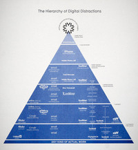
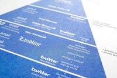

Scales of Devastation
Fri, 25 Nov 2011 15:30:19 +0000
I was trying to get my head around the scale of the Thailand floods. So I did. See the result in my visualisation column for the Guardian Datablog. The data has other numbers we couldn’t quite visualise. See here: http://www.bit.ly/scalesdev. Design: David McCandless Research: Miriam Quick Data: http://www.bit.ly/scalesdev. Sources: BBC, Wikipedia, USGS.gov and other media [...]

I was trying to get my head around the scale of the Thailand floods. So I did.
See the result in my visualisation column for the Guardian Datablog.
The data has other numbers we couldn’t quite visualise. See here: http://www.bit.ly/scalesdev.
Design: David McCandless
Research: Miriam Quick
Data: http://www.bit.ly/scalesdev.
Sources: BBC, Wikipedia, USGS.gov and other media reports (see datasheet for details)
Our second $5000 information design challenge is on!
Thu, 17 Nov 2011 09:22:32 +0000
We’ve got another pot of info-design gold to give away – and this time your work might land you on the Guardian Datablog. Last month we ran our first visualization challenge. And, boy, did you peeps really rise to it. And here’s our second challenge: MON€Y PANIC$! The financial system, debt crises, recession fears, Wall [...]

We’ve got another pot of info-design gold to give away – and this time your work might land you on the Guardian Datablog.
Last month we ran our first visualization challenge. And, boy, did you peeps really rise to it.
And here’s our second challenge: MON€Y PANIC$!
The financial system, debt crises, recession fears, Wall St occupation, currency devaluation, collapse of the markets, the END OF THE WORLD! It’s all getting rather mind-boggling.
So we and the Guardian have found some juicy datasets we want you to use to explain what in the world is going on. Clearly. Understandably. Visibly.
Top prize is $2000 for a full design. Non-designers can win $1000 in our sketch-based napkin comp. All winners will feature on the Guardian Datablog.
We might add an interactive/motion-graphics string this time if we get enough entries.
All the info – dates, rules, guidelines, entry details – is over on the Information is Beautiful Awards site.
Now go show Gordon Gecko what you got. (You can take lunch, though.)
What are the Wall St Protestors So Angry About?
Fri, 21 Oct 2011 21:00:39 +0000
Loads of people have emailed asking if we can improve the graphs on the What The Wall Street Protestors Are So Angry About megapost. Sure! Here’s our first stab. A visual about income equality in the USA. More to follow. (Check out our Debtris video too) DESIGN: David McCandless | IDEA: Business Insider | SOURCE: [...]
Loads of people have emailed asking if we can improve the graphs on the What The Wall Street Protestors Are So Angry About megapost.
Sure!
Here’s our first stab. A visual about income equality in the USA.
More to follow.
(Check out our Debtris video too)
DESIGN: David McCandless | IDEA: Business Insider | SOURCE: CIA FactBook | DATA: http://bit.ly/wallstdata
RESEARCH: Alex Lemon | ADDITIONAL DESIGN: Piero Zagami
Taste Buds
Mon, 03 Oct 2011 08:44:30 +0000
A visualization of complementary flavours by David McCandless and Willow Tyrer. All food tastes amazing, just sometimes not together. So we roved around 1000 recipes for common flavour patterns and visualized the results. A good way to build a meal, maybe, if you lack a chef’s intuitive buds. Less data visualization, more dinner visualization. An [...]
A visualization of complementary flavours by David McCandless and Willow Tyrer.
All food tastes amazing, just sometimes not together.
So we roved around 1000 recipes for common flavour patterns and visualized the results.
A good way to build a meal, maybe, if you lack a chef’s intuitive buds. Less data visualization, more dinner visualization. An infoodgraphic, perhaps. Ok, we’ll stop now.
These were created back in 2009 for the Information Is Beautiful book. Willow, a Swedish infographic designer, came up with an elegant, organic style. We thought it might be nice to release them into the wild.
Enjoy your meal.
Want to play with these in your kitchen? Buy a printable hi-res PDF from our store
Concept: David McCandless
Visualization design: Willow Tyrer
Research: Pearl Doughty-White
Source: BBC Food, Epicurious.com
The Information Is Beautiful Awards
Fri, 09 Sep 2011 13:24:45 +0000
There’s so much incredible creativity and innovation in the field of data and information visualisation, we thought we might be cool to set up an awards. The Information Is Beautiful Awards, in fact. The idea is to reward practitioners, big and small, from anywhere in the world. And to celebrate, honour and generally trumpet great [...]

There’s so much incredible creativity and innovation in the field of data and information visualisation, we thought we might be cool to set up an awards.
The Information Is Beautiful Awards, in fact.
The idea is to reward practitioners, big and small, from anywhere in the world. And to celebrate, honour and generally trumpet great work and great contributions to this exciting and growing field.
Thanks to a generous sponsor, Kantar, we can run it as a non-profit venture and hand out decent-sized cash prizes to winners.
Also, excitingly, every month, we’ll be running visualisation challenges so everyone can have a chance to contribute.
Pop over and take a look. Tell us what you think.
You can follow our awards on Twitter, too.
We’re hiring! Again!
Fri, 25 Nov 2011 12:18:30 +0000
Want to be a part of the Information Is Beautiful team? Now’s your chance. We’ve got loads of interesting book, web and film projects looming, including a new tome from David. You’ll earn decent money, develop amazing prospects, and work with a fun and lovely team. Designers – Are you an all-rounder with a perfectionist [...]

Want to be a part of the Information Is Beautiful team? Now’s your chance.
We’ve got loads of interesting book, web and film projects looming, including a new tome from David.
You’ll earn decent money, develop amazing prospects, and work with a fun and lovely team.
-
Designers – Are you an all-rounder with a perfectionist slant? Do you have a demonstrable interest in infographics and visualisations and all things beautiful? Junior & middleweight.
-
Researchers – Are you a fact-hound who’s nimble with a spreadsheet? Can you see the stories that numbers tell? Are you accurate, methodical, geeky, FAST?
-
Interns (design and research) – Do you love infographics and visualisations? Do you want to learn a thing or two while you help us out? (And actually get paid for your time.)
-
Flash & HTML5 ninjas (design and research) – Do you like to code data so it comes alive? Want to extend your skills into dynamic, unfolding, playful data visualisations? Thought so.
If you’re one or two or even four of these things, send your info to:
projects AT informationisbeautiful.net
What you need to send us:
- your CV
- portfolio and/or links to your work (for designers / ninjas)
- some quick reasons why you fit our bill
- the dates you’re available for work
- your location (we’re in London, so it’d help if you are too – though we have possibilities for remote work)
Help us spot your email. Make the subject line [Job title you're applying for] – [Your Name]
Applications close at midnight (GMT) on Friday, 9th December, 2011.
Aimes-tu La Datavision?
Mon, 07 Nov 2011 14:15:20 +0000
The French edition of our book – Datavision – is out. Très excitant! You can have a interactive leaf through some of the book’s pages here. And then pop over to Amazon to snag a copy. Apparently French kids are already calling it “archifrais” (“super-fresh!”). Win A Copy We’re so excited about this, we’re going to give [...]
The French edition of our book – Datavision – is out. Très excitant!
You can have a interactive leaf through some of the book’s pages here.
And then pop over to Amazon to snag a copy.
Apparently French kids are already calling it “archifrais” (“super-fresh!”).

Win A Copy
We’re so excited about this, we’re going to give a copy to five of you, our beautiful readers.
*** Update ***
The winners are:
- Jonathan Cantor, New York
- Irina Pinjaeva, Moscow
- Michiel Vandewalle, Bruges
- Rebecca Rubin, Washington DC
- Emmanuel Alquier, Paris
Millard Euro-O-Gram

In the meantime, whet your Datavision appetites with this Francophilic Billion Euro-o-Gram we created recently for Le Monde.
It’s available in Francophonic format too. (sorry it looks a bit ropey – French words are longer – see a higher rez version here (browse to page 20)
DESIGN & RESEARCH: David McCandless
ADDITIONAL RESEARCH: Alex Lemon
ADDITIONAL DESIGN: Derek Guo
SOURCES: Le Monde, BBC, Forbes and other media reports
DATA: bit.ly/bndollar2
Final Call: What Does Your Soul Look Like?
Thu, 13 Oct 2011 16:24:09 +0000
Way back, way back in time (er 2009), we asked you to draw your souls. Just a five-minute sketch as part of a piece of interactive art. We were curious about how people perceive their ‘souls’. Hell, we could even maybe visualize a taxonomy of souls? Anyway, we’ve had loads of entries. Loads. Such lovely [...]
Way back, way back in time (er 2009), we asked you to draw your souls. Just a five-minute sketch as part of a piece of interactive art.
We were curious about how people perceive their ‘souls’. Hell, we could even maybe visualize a taxonomy of souls?
Anyway, we’ve had loads of entries. Loads. Such lovely ones, too. And in this case, more is more.
So feel free to send us your hand-drawn soul. Which can mean your self, your personality, your insides, however you see your you. Just follow the instructions below and be part of the mass.
DETAILED INSTRUCTIONS
Here’s what to do
Please draw your soul on white paper with a black or dark pen. (Although colour is okay too, if you feel you really need it.) Then scan, webcam or photo it and upload it to:
InformationIsSoulful AT Gmail
(You can also draw on the computer if you really want. Though I think hand-drawn might be more…soulful?)
Tips:
: Create a moment for yourself to do it.
: Be expressive.
: Don’t think about it too much. Just draw whatever comes to mind. 1st drafts are good.
: It can be as simple or as complex as you like
: IMPORTANT: Please mark your picture in one corner to indicate whether you are male (M), female (F) or transgender (T).
Quality
If you’re webcamming or photo’ing, please use a flash or good lighting. Ideally it’ll be pretty much in focus. And filling the frame with the minimum of creases and crinkles.
Credits & Anonymity
If you’re happy for your name to appear in the credit lists of any resulting image, please write words like ‘HAPPY TO BE CREDITED’ in your email. Otherwise, we will treat your submission as anonymous. (If you want to be fully anonymous, you can use yousendit.com.)
That email address is: InformationIsSoulful AT Gmail

Win $3000 in our first information design competition
Fri, 23 Sep 2011 12:27:20 +0000
Your design creativity could win you $3000. Even if you can’t design. We’ve launched a series of monthly visualization competitions They’ll run alongside our shiny new annual Information is Beautiful Awards. First challenge: visualize data on the world’s non-renewable resources. Specifically, how long they might last. I had a page on this in my book. [...]
Your design creativity could win you $3000. Even if you can’t design.
We’ve launched a series of monthly visualization competitions They’ll run alongside our shiny new annual Information is Beautiful Awards.
First challenge: visualize data on the world’s non-renewable resources. Specifically, how long they might last.
I had a page on this in my book. But I’ve never been entirely happy with it. Can you do better?
If so, you could bag $2,000 for a design. That’s chunky.
And don’t worry if you can’t design. If you’ve got a brain and a pencil but no design skillz, you can still submit a sketch of your idea. There’s $1,000 prize for such “napkin” entries.
Yeah. Everyone can make information beautiful.
Hierarchy of Digital Distractions @ MoMA
Mon, 25 Jul 2011 13:48:38 +0000
Very honoured that the Hierarchy of Digital Distractions features in the latest exhibition at the Museum Of Modern Art in New York. “Talk To Me”, curated by the legendary Paola Antonelli, explores how innovations in communication design are transforming our lives. It features interactive objects, data visualizations, and brain-blending guerilla tech projects. The Hierarchy Of [...]
Very honoured that the Hierarchy of Digital Distractions features in the latest exhibition at the Museum Of Modern Art in New York.
“Talk To Me”, curated by the legendary Paola Antonelli, explores how innovations in communication design are transforming our lives. It features interactive objects, data visualizations, and brain-blending guerilla tech projects.
The Hierarchy Of Digital Distractions explores and visualizes the subtle, invisible structure I use to prioritize one digital distraction over another. Check out its page on MoMA and press some buttons. (if you tweet, use #ttmhierarchy).
limited edition prints
To celebrate, I’ve created a batch limited edition prints. Oh man – they’re gorgeous.
I thought it would be ironic to render such a technological-themed viz with the really old-school “risograph” print technique. It produces a really grainy, smudgy, soulful ‘old-school’ look. (Thanks to HatoPress in London for their awesomely detailed work).
Look at that!

(They’re also super eco-friendly: printed on recycled art paper with soy-based inks.)
You can order limited edition signed prints now in our store.
source: my tawdry life